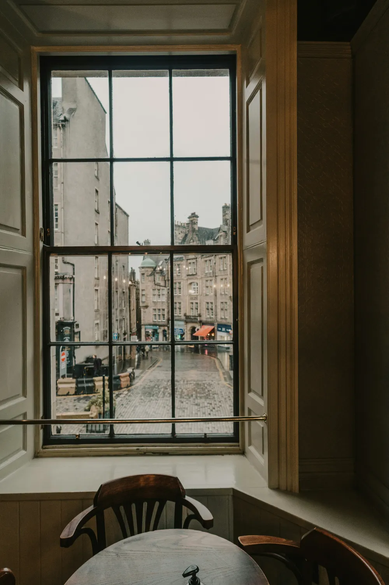
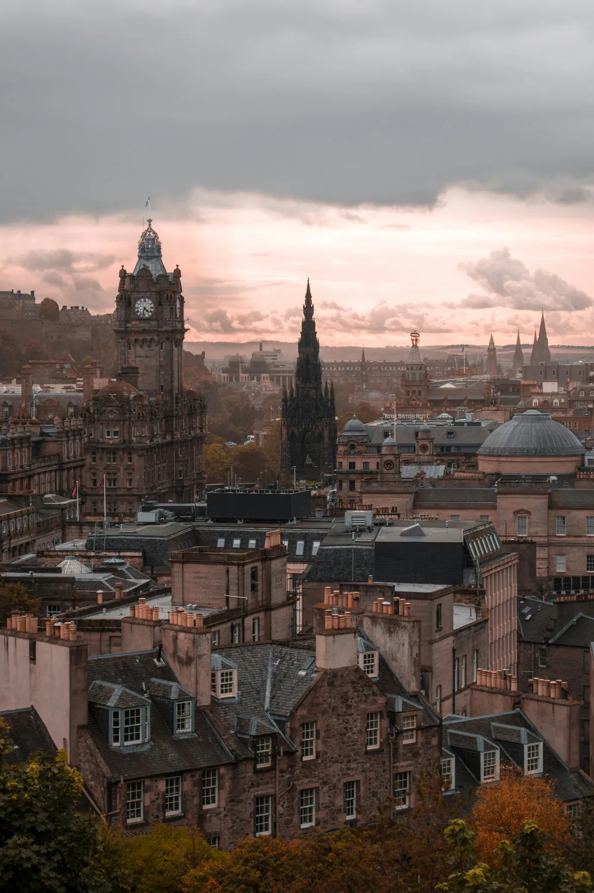
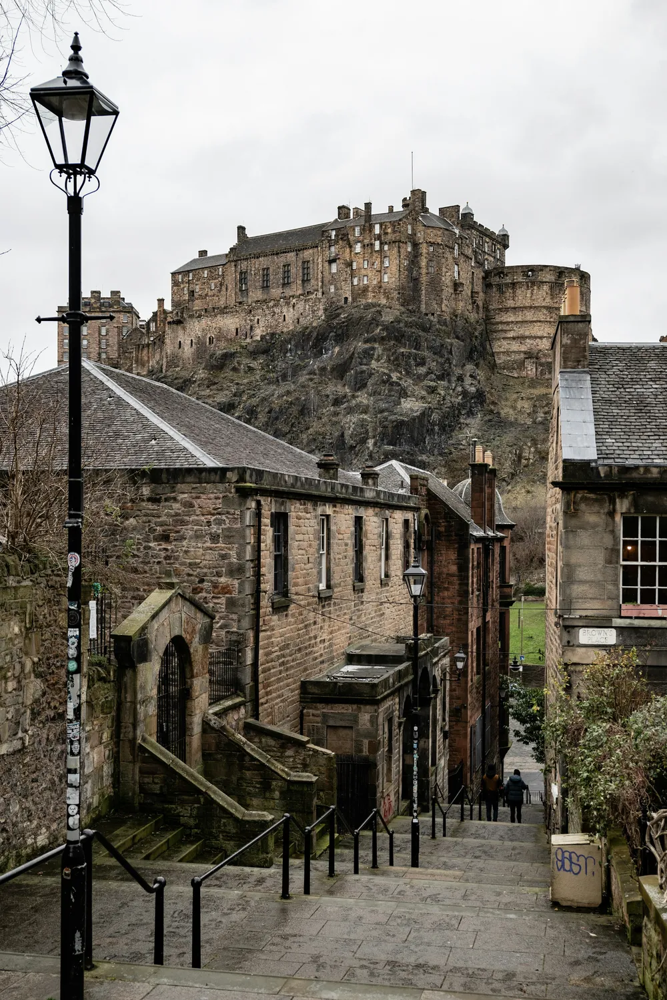

Ethically sourced
Coffee bought with care for the people who grow it.
Our story
How a tiny shop on a cobbled street became a spot for fresh coffee in Edinburgh's New Town.

Where it started
The Cobbled Roastery was founded in December 2020 by two Edinburgh friends with more than 30 years of hospitality experience between them.
They set up a micro roastery at 48 Thistle Street, roasting 100% Arabica beans in small batches and to order, right in the shop. The idea is simple: ethically sourced coffee, roasted fresh and served by people who care about it.
Visitors often describe it as the size of a living room, with a window seat that looks out onto the street. It is a quiet escape from the busy city centre.
Timeline
Two friends start roasting on Thistle Street.
Every coffee is roasted in the shop, so it reaches the cup and the bag fresh.
Cafés and businesses can also order roasted coffee for their own customers.
Drink a coffee in the shop, or take home a bag of beans.

From bean to cup
A simple look at the journey of a specialty coffee.
What we care about
Coffee bought with care for the people who grow it.
Small batches roasted to order, never sitting around for months.
A tiny café where the people behind the counter know their coffee.
Our city
Thistle Street is a quiet cobbled lane just a short walk from the city's best-known sights.


Pop in for a flat white and a pastry, or pick up a bag of freshly roasted beans.
Plan your visit